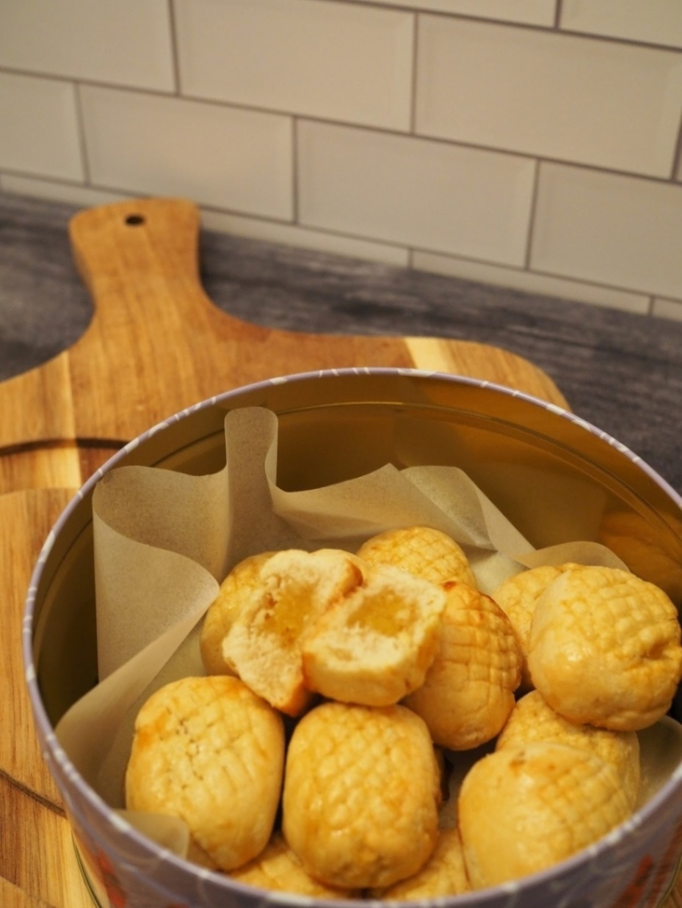

Pineapple Tarts
Ingredients
Approximate Yield: 16 Tarts
Jam filling:
- 1 Pineapple
- 3 Tablespoons of White Sugar (Can Substitute with Brown Sugar)
- 1 Dash of Ground Cinnamon
Tart:
- 1 Stick of Cold Butter
- 2 Tablespoons of White Sugar
- 1 Egg
- 1-1/2 Teaspoons of Corn Starch, Sifted
- 1-1/4 Cups of All-Purpose Flour, Sifted
Egg Wash:
- 1 Egg, Beaten
- 1 Teaspoon of Water
Directions
Cut pineapple into chunks and puree with blender.
Strain pineapple juice and discard...or pour it into a cup over ice and have a sip. 😃
Add remaining pineapple pulp into a medium fry pan and cook over medium heat, stirring occasionally to avoid burning, for 20 minutes.
Add white sugar and cook for another 10-15 minutes until it turns golden brown.
Turn off heat and spoon jam onto a plate.
Let cool. Then, divide into 16 jam balls by using a teaspoon to measure each scoop.
Store in refrigerator until ready to use.
Preheat oven to 350° F.
Place butter and sugar in a mixing bowl.
Attach bowl and paddle attachment to mixer. Beat on medium setting (4-6) until well-incorporated.
Add egg and beat on medium setting for another 1-2 min.
Slowly add sifted flour and corn starch, taking time to scrape down the sides when necessary.
Continue mixing on low setting (2-3) for a few more minutes until a soft dough is formed.
Lay the dough on a lightly floured work surface.
Divide the dough into 16 equal rounds.
Using a rolling pin or your palms, flatten a piece of pastry dough and add one round of pineapple filling to the middle.
Cover the filling using the sides of the pastry dough and roll it in circular motions. Then, shape it into a rectangular long shape.
With a small paring knife, you can also make a crisscross pattern to resemble a pineapple.
Place the pineapple tarts on a baking sheet lined with parchment paper, leaving about an inch in between all the tarts.
Brush tarts with egg wash using a small pastry brush.
Bake for 15-17 minutes/until golden brown.